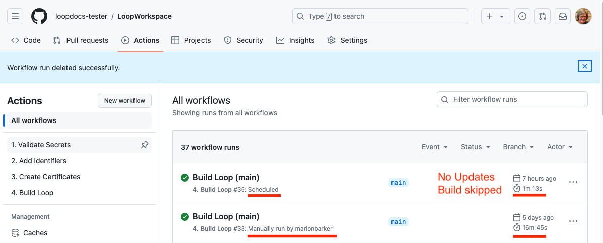

Automatic Update & Build
Overview¶
The instructions provided for building with a browser include settings to automatically update and build for you.
This keeps the most recent version of the Loop app available in TestFlight for you to install when you are ready.
These events are automatically scheduled:
- Once a week: Check for a new release of the Loop app:
- If found, your fork is automatically updated and a new build created and uploaded to TestFlight
- Once a month: Build the app and upload the fresh build to TestFlight
If you do not want this automatic schedule, you can modify it.
Regardless of your choice, please Disable Automatic Installation from TestFlight. You should be alert any time your Loop app is updated. Check that all settings are maintained and pay attention to make sure the app behavior is nominal.
You still need to take these actions to ensure a recent build of the Loop app is available in TestFlight for you to install on your phone when you choose:
- Keep your Apple Developer account up to date with agreements signed
- Renew Certificate once a year
Successful Weekly Action¶
Normally, you will see a successful build action once a week. This happens at 08:00 UTC every Wednesday.
If there are no updates to the main branch, your actions show a very short, successful build action as shown in the graphic below. It only takes about a minute because the logic says - no update then skip the build.

If there is an update, the build action updates your fork and creates a new build.
In that case, you should check your favorite information site to find out what the update was and then, when you are ready, install the update using the TestFlight app on your phone.
Successful Monthly Action¶
On the first day of every month at 06:00 UTC, you will see a successful build action. The purpose of this build is to provide a recent version of the app in TestFlight so you are never in a situation where you have no app on your phone.
You start getting Notifications when there are fewer than 20 days until expiration. When you see the warning, install the newest build from your TestFlight app. You do not want to get the dreaded "Loop Beta is not available" message on your phone. (The warnings get very agressive when close to expiration.)
What are the alive branches?¶
The automatic update and build feature is embedded in the build_loop.yml code and uses the GitHub scheduling feature to trigger actions to run automatically.
Some may have noticed one or more branches added to your repository that start with the name alive. Don't worry about these. They are automatically created to ensure GitHub will keep building your app automatically.
- GitHub keeps track of repositories
- If there is no activity in a given repository in 60 days, GitHub disables Actions
- If your Actions are disabled, you don't get automatic builds
- Clever people developed a work around for this
You may see branches called alive, alive-dev or alive-main in your repository.
The alive branches are created and used to make sure at least one commit per month is added to an alive branch in your repository. That keeps your repository active to allow the automatic update and build process to work.
The alive branches are only used for the keep-alive functions. Do not build using an alive branch. Most people will build using the default branch of main.
Automatic Creation of alive branch¶
The alive branch you need is created automatically when you run the Build Loop action.
I got an error regarding a branch with alive in the name
- Sometimes you get an error about an
alivebranch - If you do get an error, simply delete the branch and run the
Build Loopaction again- Use this GitHub link or ask for help when deleting a branch
- You can delete every branch that starts with the name
alive - Leave the other branches alone unless a mentor directs you to take action
Modify Automatic Building¶
For someone using development code for their own use, they could decide to choose when to update their fork to the most recent commit. They can still have the advantage of automatic building without automatic updates; in other words, they want a new build added to TestFlight every month. There may be other configurations someone would choose. These options are available starting with Loop 3.3.0 (dev branch) and later.
You can affect the default behavior:
Modify Automatic Schedule¶
This is an optional step. If you are happy with the automatic sync and update, you are done with this page.
Instructions to Modify the Automatic Actions (Click to Open/Close)
You can modify the automation by creating and using some variables.
To configure the automated build more granularly involves creating up to two variables: SCHEDULED_BUILD and/or SCHEDULED_SYNC. See How to configure a variable.
Note that the weekly and monthly Build Loop actions will continue, but the actions are modified if one or more of these variables is set to false. A successful Action Log will still appear, even if no automatic activity happens.
- If you want to manually decide when to update your repository to the latest commit, but you want the monthly builds and keep-alive to continue:
- create the variable
SCHEDULED_SYNCand set it to false - either do not create the variable
SCHEDULED_BUILDor set it to true - If you are building the
dev branchat a time when there is a lot of activity in that branch, you may want this configuration
- create the variable
- If you want to only build when an update has been found:
- either do not create the variable
SCHEDULED_SYNCor set it to true - create the variable
SCHEDULED_BUILDand set it to false - Warning: if no updates to your default branch are detected within 90 days, your previous TestFlight build may expire requiring a manual build
- During a time when updates are not happening frequently, this is not a good choice
- either do not create the variable
SCHEDULED_SYNC |
SCHEDULED_BUILD |
Automatic Actions |
|---|---|---|
true (or N/A) |
true (or N/A) |
This is the default: keep-alive, weekly update check (auto update/build), monthly build with auto update |
false |
true (or N/A) |
keep-alive, monthly build, no auto update |
true (or N/A) |
false |
keep-alive, weekly update check with auto update, only builds if update detected |
false |
false |
no automatic activity, no keep-alive |
How to configure a variable¶
- Go to the "Settings" tab of your LoopWorkspace repository.
- Click on
Secrets and Variables. - Click on
Actions - You will now see a page titled Actions secrets and variables. Click on the
Variablestab - To disable ONLY scheduled building, do the following:
- Click on the green
New repository variablebutton (upper right) - Type
SCHEDULED_BUILDin the "Name" field - Type
falsein the "Value" field - Click the green
Add variablebutton to save.
- Click on the green
- To disable scheduled syncing, add a variable:
- Click on the green
New repository variablebutton (upper right) -
- Type
SCHEDULED_SYNCin the "Name" field
- Type
- Type
falsein the "Value" field - Click the green
Add variablebutton to save
- Click on the green
Your build will run on the following conditions:
- Default behaviour:
- Run weekly, every Wednesday at 08:00 UTC to check for changes; if there are changes, it will update your repository and build
- Run monthly, every first of the month at 06:00 UTC, if there are changes, it will update your repository; regardless of changes, it will build
- Each time the action runs, it makes a keep-alive commit to the
alivebranch if necessary
- If you disable any automation (both variables set to
false), no updates, keep-alive or building happens whenBuild Loopruns - If you disabled just scheduled synchronization (
SCHEDULED_SYNCset tofalse), it will only run once a month, on the first of the month, no update will happen; keep-alive will run - If you disabled just scheduled build (
SCHEDULED_BUILDset tofalse), it will run once weekly, every Wednesday, to check for changes; if there are changes, it will update and build; keep-alive will run
Disable Automatic Actions¶
To enable the scheduled build and sync, the GH_PAT must hold the workflow permission scopes. This permission serves as the enabler for automatic and scheduled builds with browser build. To disable this, follow these steps:
- Go to your FastLane Access Token
- If it says
repo,workflownext to theFastLane Access Tokenlink, then automatic building is enabled - To disable automatic update and build, click on the link to open the token detail view
- Click to uncheck the
workflowbox - Click to check the
repobox
- Click to uncheck the
- Scroll all the way down to and click the green
Update tokenbutton - Your token now holds only the
repopermission
If you choose not to have automatic building enabled, be sure the GH_PAT has repo scope or you won't be able to manually build.
Stop Building¶
What if I decide I don't want the automatic building feature?
-
If you are using the released version of Loop, please leave automatic building running
- Please read TestFlight Automatic Updates on how to configure TestFlight so you choose when the updated app gets installed on your phone
- Otherwise, you may see the dreaded "Loop Beta has expired" message, have a Loop that won't open and not have a version ready to go in TestFlight that you can install within a few seconds
-
If you are taking a break from Loop and want to stop monthly Build emails, consider disabling actions for the
Build Loopaction for your app.- GitHub Directions to Disable and Enable a Workflow
- It is the Build action that kicks off the update and build steps, so simply disabling the one action is sufficient
-
If you are done with Loop, you can delete the whole repository; but you should be sure about this because you'll need to start over with Configure to use Browser to restore ability to build Loop with GitHub.